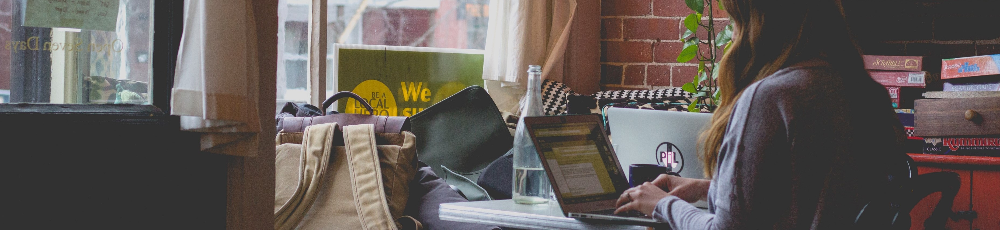

Learn More
“Women’s rights are an essential part of the overall human rights agenda, trained on the equal dignity and ability to live in freedom all people should enjoy.” - Ruth Bader Ginsburg
This guide will help develop a curriculum or research topics for women's subject areas. A list of names is included for Inspiring Women to Know. First, check out the ERIC video below for the search results of Peer Reviewed Open Access journals on Women Studies, Gender Studies, and Feminist Studies curriculum topics.